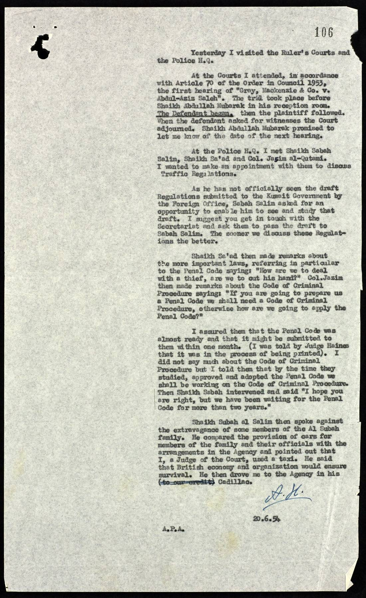

١٩٥٤ · رسائل من الوكالة السياسية البريطانية في الكويت عن صياغة قوانين الكويت
العقيد جاسم القطامي وأولى القوانين الجزائية في الكويت
ما هي
تأمل الوكالة أن يكون الشيخ سعد، العائد للتو من كلية هندن للشرطة، والعقيد جاسم القطامي قد أقنعا الشيخ صباح بالعمل على تشريعات جديدة، وتريد أن تصل مسودتا قانون الإجراءات الجزائية وقانون الجزاء إلى أيديهم قريبا. ويلتقي مسؤول بريطاني أيضا بالشيخ صباح السالم والشيخ سعد والعقيد جاسم في مقر الشرطة بشأن أنظمة المرور.
أهميتها
أقدم ذكر عُثر عليه لجاسم برتبة عقيد، قبل السويس بعامين، يعمل على أولى قوانين الكويت الجزائية وأنظمة المرور.
من المقصود
هو جاسم القطامي نفسه الوارد اسمه الكامل في وثائق أخرى: مدير الشرطة الذي استقال وقت أزمة السويس، ثم النائب القومي في مجلس الأمة.
صور الصفحات


النص الأصلي
ملاحظات
كتب البريطانيون الاسم «al Qutami» في هذا الملف.
أسماء أخرى
المصادر
الأرشيف الوطني البريطاني في لندن، رقمنه الأرشيف الرقمي للخليج العربي (agda.ae). الصور منشورة بإذن من الأرشيف الوطني البريطاني.
مرجع الأرشيف
- FO 371/109924 · Extra-territorial jurisdiction in Kuwait; jurisdiction of HBM's Court for Kuwait in divorce cases involving Moslems
كيف كُتب هذا النص: نُسخ من قراءة الأرشيف لنص الصورة، وصُحح بالمقارنة مع الصورة حيث كانت القراءة مشوهة. وتشير … إلى نص محذوف. الترجمة العربية من Claude، يرجى مراجعتها.
افتح في الموقع التفاعلي